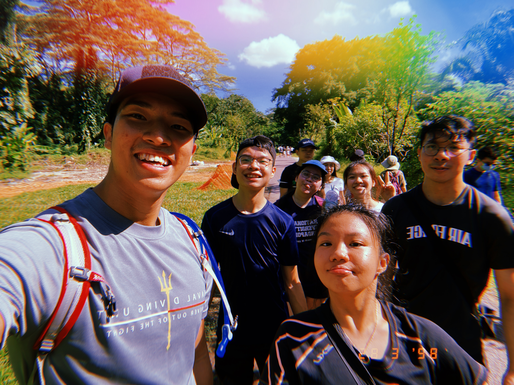

Pack your bags! You don't want to miss this!
With muddy slopes, steep steps and deep puddes, this place is not going to be easy but worth it.
Once down the slope you'll see a tunnel to the right. That's the old railway tunnel! Take many nice photos and but do not enter there as it does not lead to the enchanted forest. Instead, your adventure awaits through the LEFT SIDE of the path.
Follow along as my friends and I trek through the forest!

This trail is not for beginners, the moment we entered, we faced our first obstacle...which was a fallen tree.
Immediately after the first obstacle, we were immediately confronted with the second one...mud.
It just rained the day before, that's why it was so muddy. Be sure to check in with the weather both the day before and on the day itself so you know what to expect!

There are many obstacles at the start but after overcoming those, we made it into the heart of the forest. Looking up we saw a tree that so a head over the rest!

There's also leaves as big as umbrellas that we could find shade under for a while!
Following the path, we eventually came to clearings where we could see the vast beauty of the forest. What a sight to behold! You don't get this in the urban jungle.


Eventually, the forest path joins with the path in the green corridor and we found ourselves at the Old bukit Timah rail station. It was such an enjoyable trek, getting dirty together, helping each other through obstacles. Even though it was a challenging trek, it was worth it at the end of the day.

There's so much you and do and experience in the Clementi Forest like: